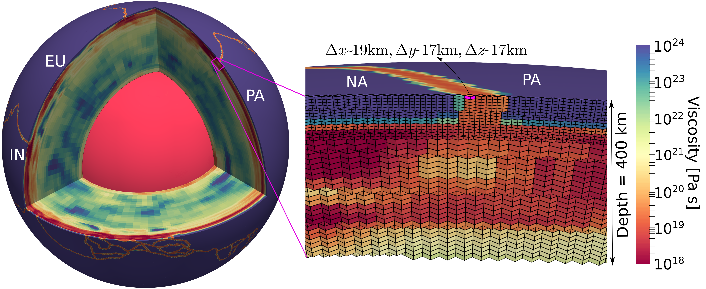

Research Projects



I am a geophysicist interested in investigating the coupling between deeper mantle flow and observed surface tectonics. For my research, I develop global and regional-scale numerical models that combine available geophysical constraints. I contribute and use ASPECT to setup and run all my models. Currently, I am working with Prof. Timo Heister to develop tools for online visualizations of geodynamic models that can be shared within the scientific community. A brief detail of my past and current projects is mentioned below.
PhD, 2020
Center for Earthquake Research and Information, University of Memphis
Integrated M.Tech in Geophysics, 2014
Indian Institute of Technology, Roorkee